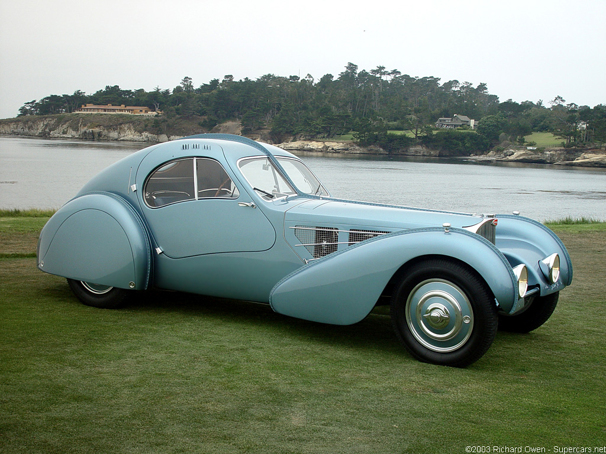
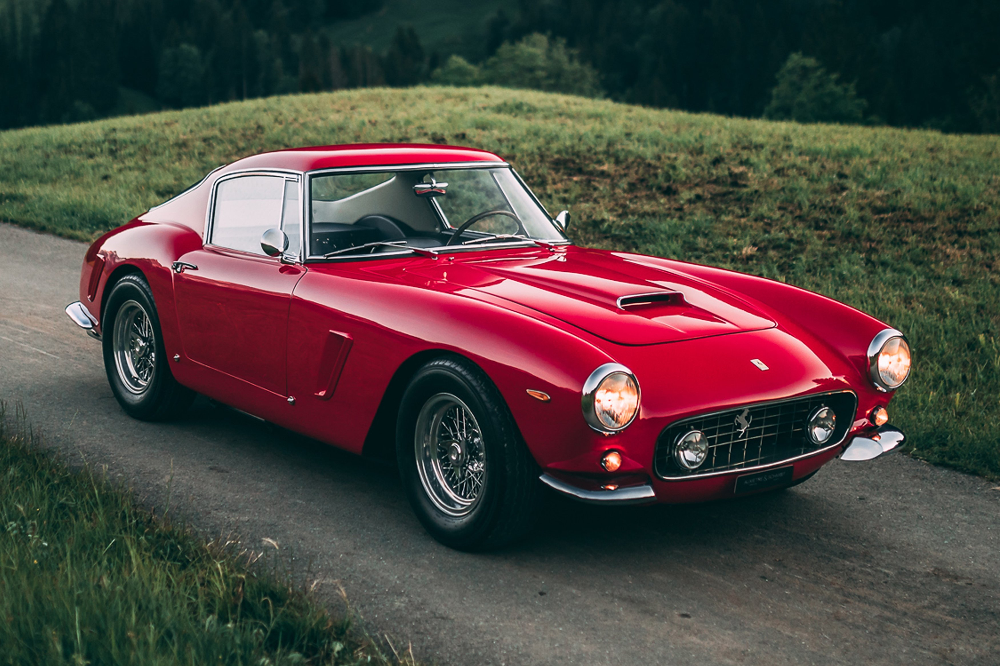
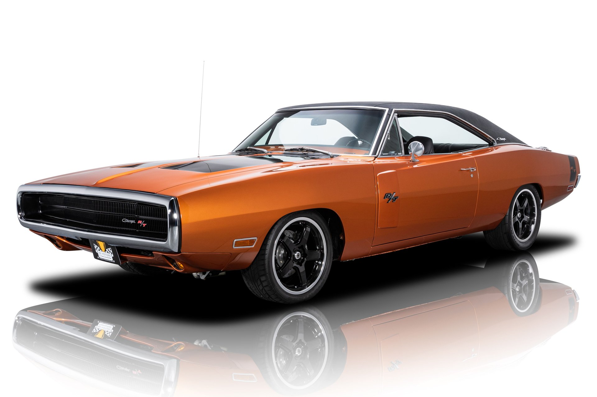
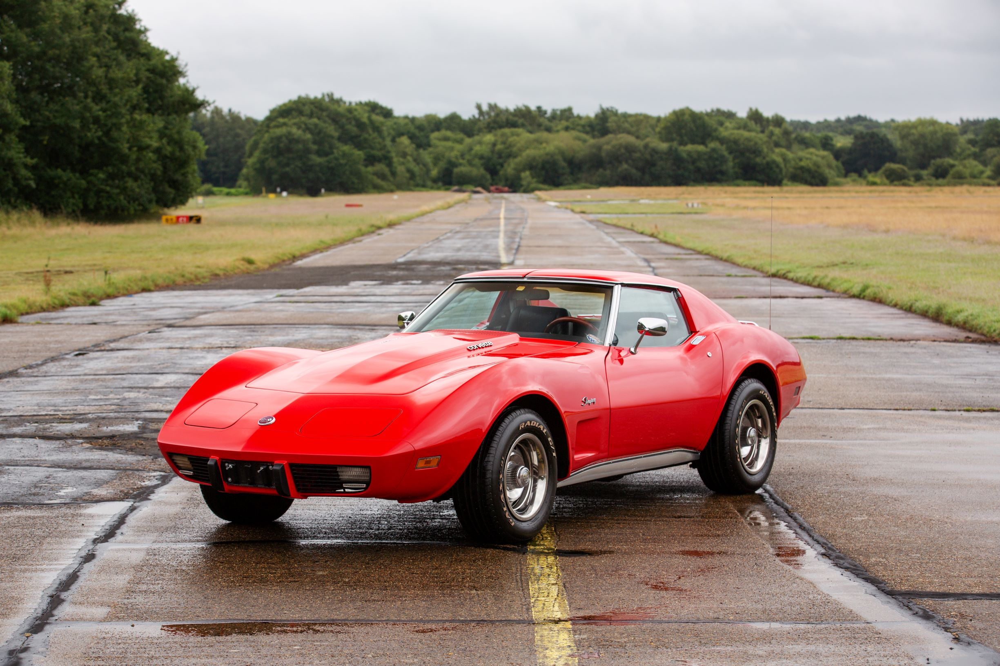
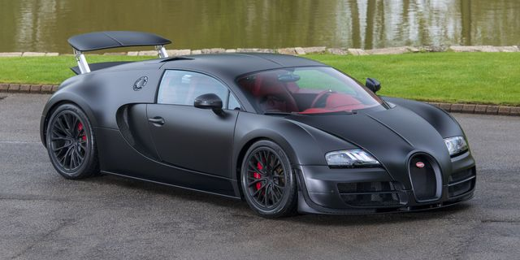
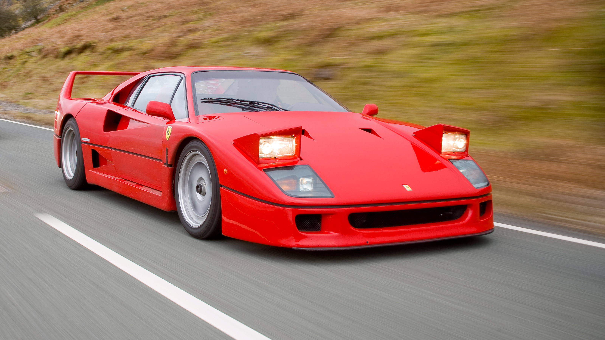
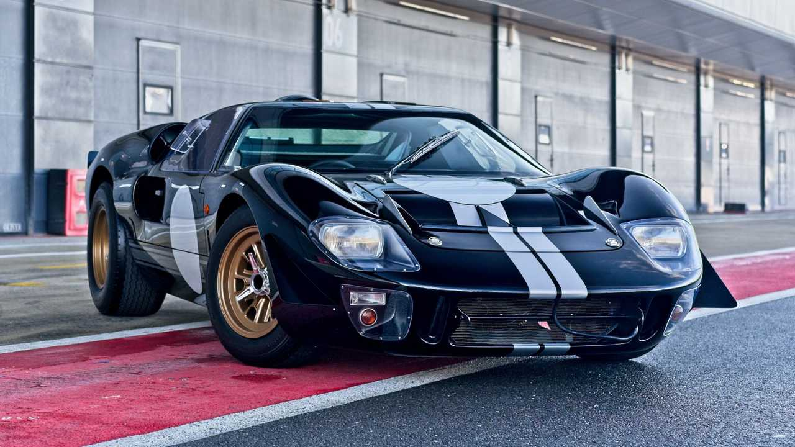
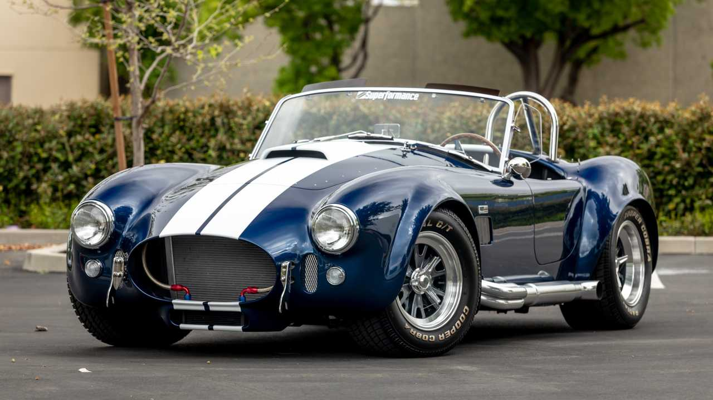

History of Automotives
1886
First automobile is created by Carl Benz
The three-wheeled vehicle's engine has just one cylinder, less than one horsepower and a 10-m.p.h. top speed.
1900
Porsche Shows First Hybrid Car at Paris World's Fair
Ferdinand Porsche debuts Austria's Lohner-Porsche, a radical hybrid car that generates electricity from two small gasoline engines to power its front wheels.
1912
Cadillac Makes the Engine Crank Obsolete
The first electric starter eliminates the need for drivers to hand-crank cars to life.
1913
Henry Ford's Assembly Line Starts Rolling, Brings Car Ownership to the Masses
Henry Ford implements the first moving automotive assembly line for his Model T, soon trimming its production time from 12.5 hours to 93 minutes. Between 1908 and 1927, Ford builds 15 million Model T's, changing the very fabric of industrial and agricultural America.
1938
Hitler Launches the Volkswagen Beetle
Although only 600 were made before factories had to switch production to aid in the German war effort, By the late 1950s, the Beetle is a smash hit around the world.
1940
Willys-Overland Delivers First-Ever Jeep
Completing its design in a remarkable 75 days, Willys delivers its prototype “Quad”—named for its four-wheel-drive system—and goes on to build nearly half of the 700,000 Jeeps used between 1941 and 1945, before switching to civilian production. The popular Jeep Wrangler is a direct descendant of the Willys Jeep.
1955
Mercedes 300 SL Crashes Horrifically at Le Mans
In racing's deadliest day, French driver Pierre Levegh crashes his Mercedes-Benz 300 SLR during the prestigious 24 Hours of Le Mans Formula One race. The Mercedes' split engine plows through the crowd, and its buzzsawing hood decapitates dozens of spectators. The magnesium alloy “Elektron” body burns white-hot for hours, even as the race continues to its tragic finish. Levegh and 83 spectators are killed, with 120 injured. Several countries, including France and Germany, ban auto racing until safety standards improve. Mercedes will not race again for more than 30 years.
1963
Porsche 911 Introduced at Frankfurt Motor Show
The world's most iconic sports car is born. The distinctive silhouette endures through eight generations of redesigns. Porsche builds its one millionth 911 in 2017.
1964
Ford Mustang Sparks Beatlemania-Style Frenzy
Henry Ford designs an affordable answer to European sports cars, the Mustang (base price: $2,368) garners 22,000 orders on its first day, and sells 1 million units in 18 months.
1981
McLaren Creates First Carbon-Fiber Race Car
The McLaren MP4/1 rolls out of its garage with a lightweight, ultra-strong carbon-fiber chassis. Within one season, it renders its rivals in Formula One obsolete. Today, carbon fiber is a critical component for high-end racing and supercar manufacturing.
1997
Toyota Prius Becomes Fuel-Sipper Supreme
The fuel-saving, shoebox-shaped Toyota sparks a sales sensation. Rival automakers scramble to create their own gas-electric hybrids.
2005
Bugatti Veyron Becomes World's Fastest Production Car
Reviving a once-glorious but moribund brand, the Volkswagen Group's Bugatti Veyron 16.4 shocks the world with its 987-horsepower, four-turbo, 16-cylinder engine. The $1.9 million earthbound missile is the first car with 1,000 European PS (or 987 horsepower), and reaches an improbable 249-mph top speed.
2012
Tesla Model S Disrupts Fossil-Fueled Industry
Elon Musk's first car is the Tesla Roadster, based on a Lotus Elise chassis, heavily reengineered to run on electricity. But the Model S sedan is the world changer: With its slinky shape, moonshot acceleration and revolutionary tech, Musk's upstart has global automakers tearing up product plans and realizing that electric cars are the future, not a fad.
Featured Cars
1936 Bugatti Type 57 SC Atlantic
Many consider this the first supercar ever built, with a maximum speed of 123 MPH. Only 4 of these cars were ever created and 3 of those cars are still in existence, with the 4th being missing for over 80 years. The Bugatti Type 57 SC Atlantic is regarded as the most valuable car in the world.
1961 Ferrari 250 GTO
This Ferrari was designed to be a racecar that also met regulations in order to be classified street legal. The first prototype was raced in the Daytona Continental and took 4th place in 1962. A total of 39 models were manufactured by Ferrari.
1970 Dodge Charger RT
The 1970 Dodge Charger RT is a classic car that is popular among TV shows and movies. The list of cinematography in which the Charger makes an appearance includes but is not limited to Dirty Mary Crazy Larry, The Fast and the Furious, and Dukes of Hazzard. The base price back in 1970 was only $3,700. The car boasted 350 base horsepower from a 440 cubic-inch Magnum V-8.
1976 Chevrolet Corvette Stingray
The 1976 Chevrolet Corvette Stingray may be the most classic Corvette ever produced. There were a little over 46,000 units produced with a starting price of $7,604.85. The 1976 Corvette featured various minor exterior edits in comparison to the prior year's model. Updates that included the re-introduction of the aluminum wheels, removing the air-extractor vents from the rear deck, removing the cowl flap from the hood, and introducing two different styles of rear bumper.
2012 Bugatti Veyron 16.4 Grand Sport
This is the world's fastest production convertible. This car is stocked with a quad turbocharged and intercooled DOHC 64-valve W-16 engine. It can reach a top speed of over 248 mph and 0-60 in less than three seconds. It also sports an extremely luxurious interior. I had the opportunity to see one parked on the street in Beverly Hills.
1987 Ferrari F40
This is a mid-engine rear-wheel drive Ferrari that was designed as a celebration of 40 years of Ferrari. The Ferrari F40 was the last Ferrari vehicle that was personally approved by Enzo Ferrari. With this approval came a car that was the fastest, most powerful, and most expensive vehicle for sale when it was produced. There were 1,311 Ferrari F40 models produced with less than 250 of those being shipped to the United States. The original price of the F40 was $399,150, however, on average, purchasing one of these vehicles today will run its purchaser $1.5 million. This model was regarded as the first 200-mph production car, the F40 rocked a 2.9L twin-turbo V8 engine, generating 471 hp and 426 lb-ft of torque.
1964 Ford GT40
The second oldest Ford GT40 was most recently sold at auction for s hefty 7 million. The whole reason this car was created was the purpose of dethroning Ferrari from dominating endurance racing in Europe. This car came equipped with a top speed just shy of 200 MPH. This automobile supported a mid-engine design with rear wheel drive. There were only 111 Ford GT40's ever produced.
1997 McLaren F1 GT

The McLaren F1 GT features a mid V-12 engine and a carbon fiber chassis frame. The driver seat is also mounted in the center of the vehicle. It was the world's fastest production car for 12 consecutive years, topping out at 240.1 mph. McLaren only built three examples of the F1 GT in 1997. In comparison to the previous model, this version included a much longer nose and rear sections, wider fenders, a spoiler integrated into the rear fascia, and a bigger wing. The upgrades increased downforce and reduced drag, making the F1 faster than it's ancestors. One of the GT's sold for over 1 million dollars back in the 90's.
2011 Pagani Huayra
This is personally, my favorite supercar to exist. I believe it's aesthetic is second to none. This supercar uses a Mercedes-sourced V12 engine and takes advantage of Pagani's in-house carbon fiber expertise. This car was named after the god of wind, Aymara Huayra Tata. The Pagani Huayra is a coupé with 2 doors and a mid-mounted engine which transmits its power through the rear wheels.
1967 Shelby Cobra 427
In additional to the competition cars, 260 of these units were produced as street-legal variants. One of these vehicles could go from zero to 60 mph in about 4.3 seconds, and to 100 mph in 8.8 seconds. The most a single buyer has paid for one of these cars is $13,750,000. The high-performance race car components of the car lead made the street-legal version of the car very hard to control.